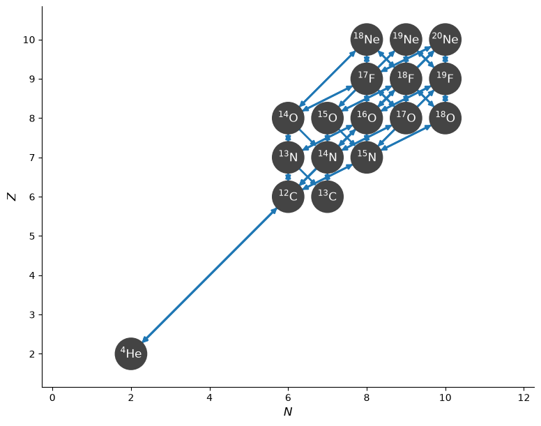
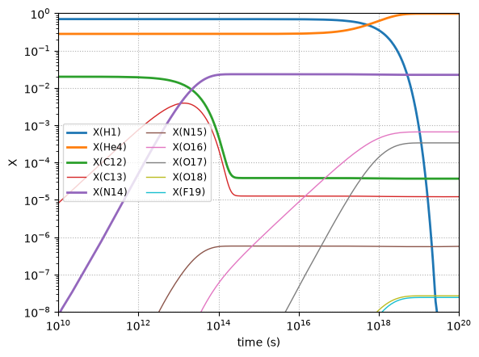

CNO Burning Example#
We can use pynucastro to generate the righthand side function for an astrophysical reaction network.
We’ll create a CNO network that has the rates for all 4 CNO cycles + hot-CNO, as listed here: https://reaclib.jinaweb.org/popularRates.php
import numpy as np
import matplotlib.pyplot as plt
import pynucastro as pyna
net = pyna.network_helper(["p", "he4",
"c12", "c13",
"n13", "n14", "n15",
"o14", "o15", "o16", "o17", "o18",
"f17", "f18", "f19",
"ne18", "ne19", "ne20"], tabular_ordering=["ffn", "oda"])
net.summary()
Network summary
---------------
explicitly carried nuclei: 18
approximated-out nuclei: 0
inert nuclei (included in carried): 0
NSE compatible? False
total number of rates: 65
rates explicitly connecting nuclei: 65
hidden rates: 0
reaclib rates: 30
starlib rates: 0
temperature tabular rates: 0
weak tabular rates: 8
approximate rates: 0
derived rates: 27
branched rates: 0
modified rates: 0
custom rates: 0
We can visualize the network and rates linking the nuclei
fig = net.plot()

pynucastro can write out the python code needed to evaluate the reaction rates
net.write_network("cno_integration_example.py")
/opt/hostedtoolcache/Python/3.14.7/x64/lib/python3.14/site-packages/pynucastro/rates/derived_rate.py:125: UserWarning: C12 partition function is not supported by tables: set log_pf = 0.0 by default
warnings.warn(UserWarning(f'{nuc} partition function is not supported by tables: set log_pf = 0.0 by default'))
/opt/hostedtoolcache/Python/3.14.7/x64/lib/python3.14/site-packages/pynucastro/rates/derived_rate.py:125: UserWarning: N13 partition function is not supported by tables: set log_pf = 0.0 by default
warnings.warn(UserWarning(f'{nuc} partition function is not supported by tables: set log_pf = 0.0 by default'))
/opt/hostedtoolcache/Python/3.14.7/x64/lib/python3.14/site-packages/pynucastro/rates/derived_rate.py:125: UserWarning: C13 partition function is not supported by tables: set log_pf = 0.0 by default
warnings.warn(UserWarning(f'{nuc} partition function is not supported by tables: set log_pf = 0.0 by default'))
/opt/hostedtoolcache/Python/3.14.7/x64/lib/python3.14/site-packages/pynucastro/rates/derived_rate.py:125: UserWarning: N14 partition function is not supported by tables: set log_pf = 0.0 by default
warnings.warn(UserWarning(f'{nuc} partition function is not supported by tables: set log_pf = 0.0 by default'))
/opt/hostedtoolcache/Python/3.14.7/x64/lib/python3.14/site-packages/pynucastro/rates/derived_rate.py:125: UserWarning: N15 partition function is not supported by tables: set log_pf = 0.0 by default
warnings.warn(UserWarning(f'{nuc} partition function is not supported by tables: set log_pf = 0.0 by default'))
Now we can import the network that was just created
import cno_integration_example as cno
Structure of the ODE system#
import inspect
print(inspect.getsource(cno.rhs_eq))
@numba.njit()
def rhs_eq(t, Y, rho, T, screen_func):
rate_eval = do_rate_eval(t, Y, rho, T, screen_func)
return ydot_eq(Y, rho, rate_eval)
Note
The forward and reverse rates are included for each link, and these are explicitly paired together to help with equilibrium.
Integrating with SciPy#
We’ll use the BDF solver from SciPy solve_ivp method
from scipy.integrate import solve_ivp
Now we’ll set the thermodynamic conditions. We initialize mass fractions and then convert to molar fractions, since that’s what the RHS uses
rho = 150
T = 1.5e7
X0 = np.zeros(cno.nnuc)
X0[cno.jp] = 0.7
X0[cno.jhe4] = 0.28
X0[cno.jc12] = 0.02
Y0 = X0/cno.A
Notice that there are 2 separate tolerances–a relative and an absolute tolerance.
tmax = 1.e20
sol = solve_ivp(cno.rhs, [0, tmax], Y0, method="BDF",
dense_output=True, args=(rho, T), rtol=1.e-6, atol=1.e-8)
sol.success
True
Now we can plot the mass fractions.
fig = plt.figure()
ax = fig.add_subplot(111)
for n in range(cno.nnuc):
lw = 1
max_X = (sol.y[n, :] * cno.A[n]).max()
if max_X > 1.e-2:
lw = 2
if max_X > 1.e-8:
ax.loglog(sol.t, sol.y[n, :] * cno.A[n],
lw=lw, label=f"X({cno.names[n].capitalize()})")
ax.set_xlabel("time (s)")
ax.set_ylabel("X")
ax.set_xlim(1.e10, 1.e20)
ax.set_ylim(1.e-8, 1.0)
ax.legend(fontsize="small", ncol=2)
ax.grid(ls=":")

try it…
What happens if we loosen the tolerances?